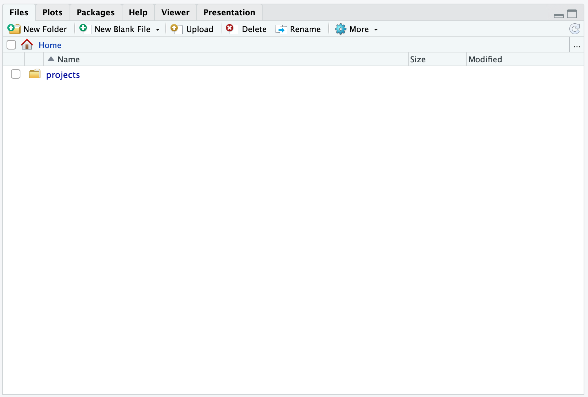
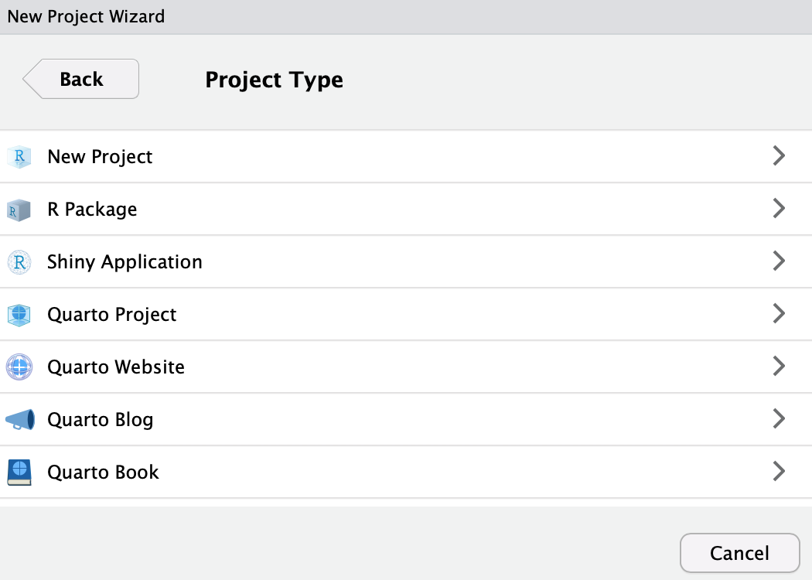
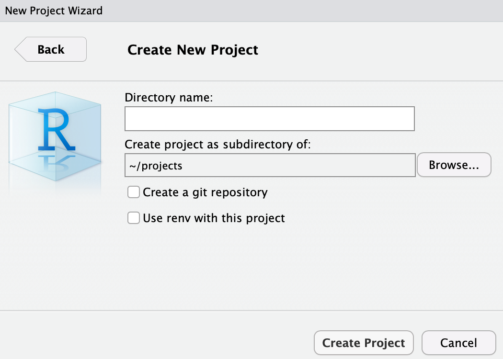
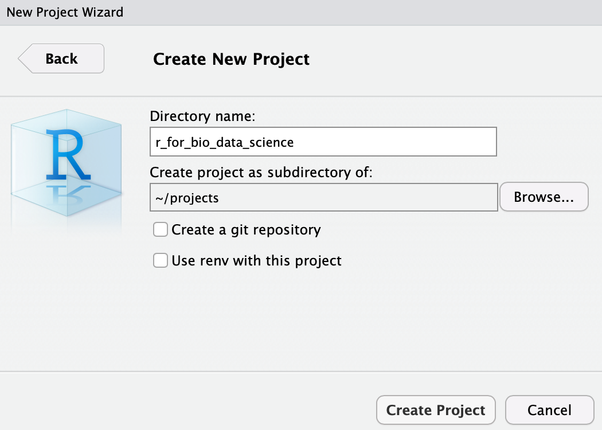
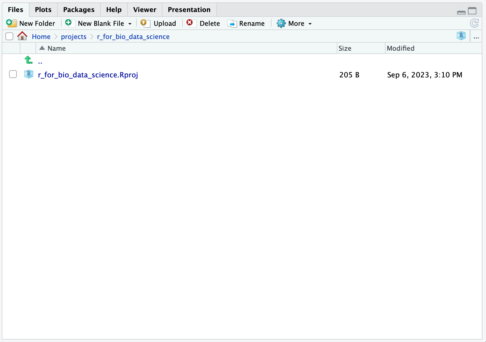
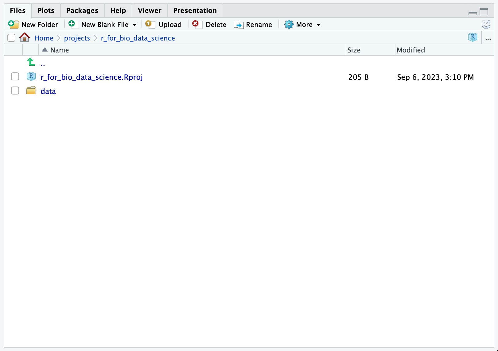
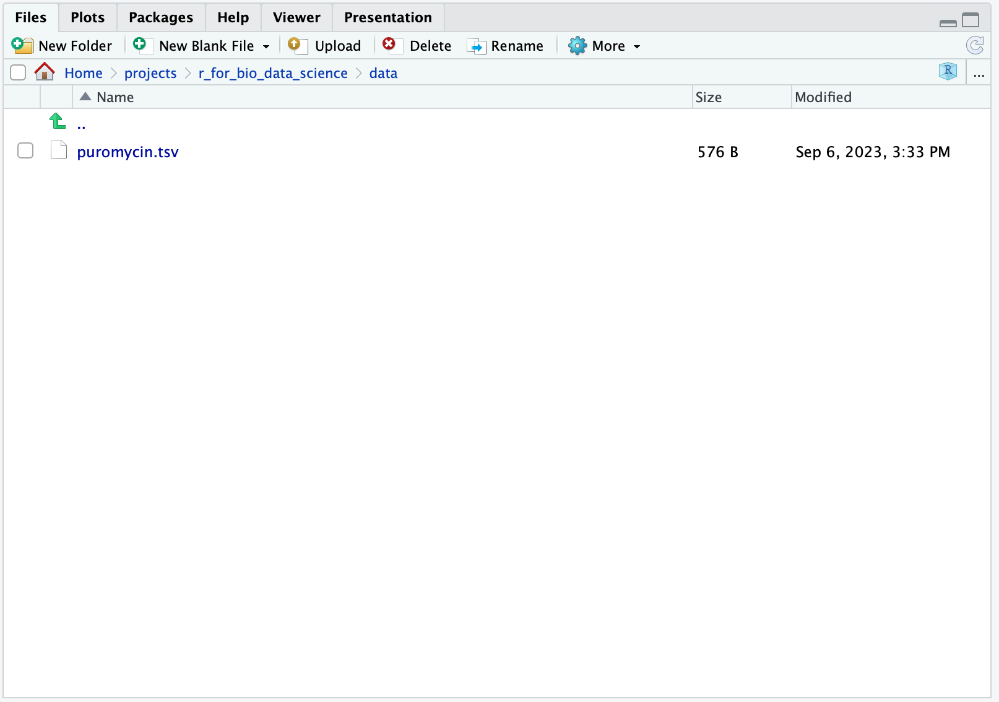
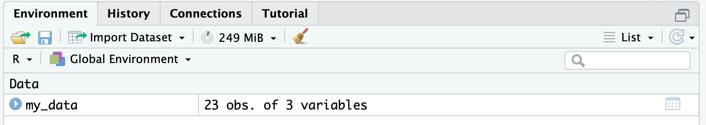
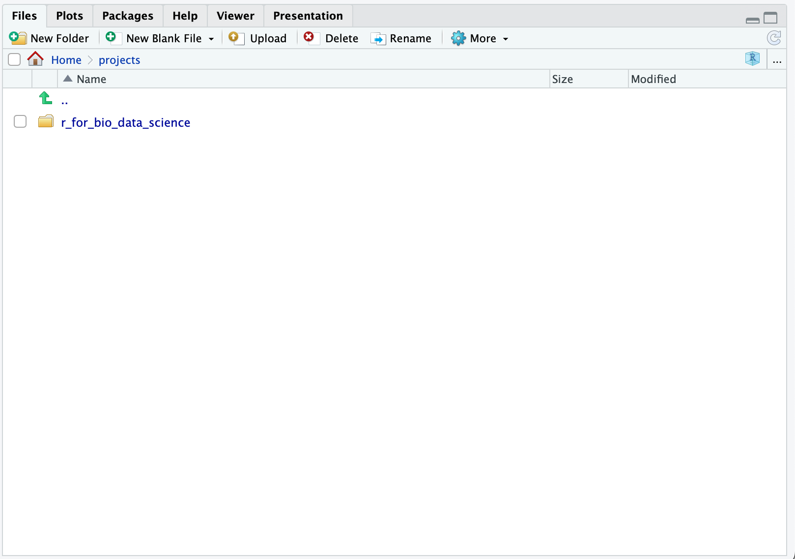
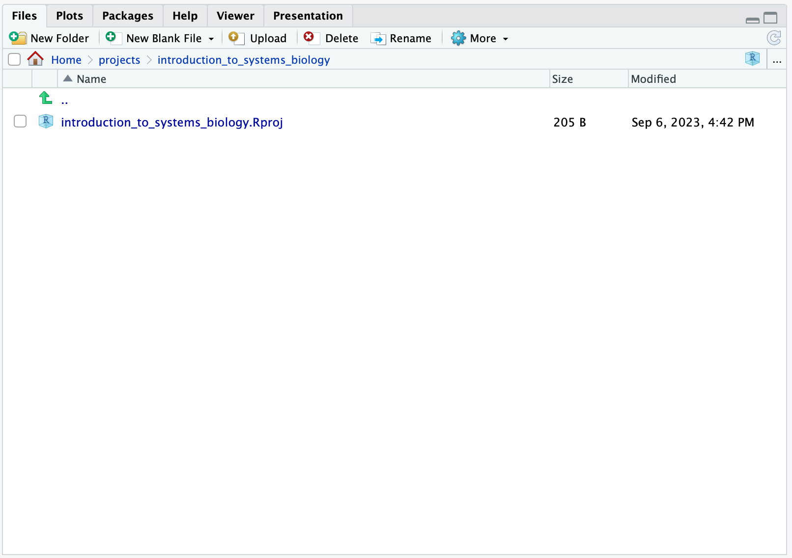

write.table(x = datasets::Puromycin, file = "data/puromycin.tsv", sep = "\t")Paths & Projects
You step onto the road, and if you don’t keep your feet, there’s no knowing where you might be swept off to

In context of R, a path is a way to tell R, where to look for a file. First, let us familiarise us a bit with paths in RStudio.
Getting Familiar with Paths in RStudio
Log on to the RStudio Cloud Server and in case you do so for the first time, your files-pane should look something like:
 Here,
Here, 
Home defines your home, that is where you “live” on the server. Now, click the button 
New Folder and create a new folder called projects. Hereafter, your files-pane should look something like:

Now, click the projects folder you created and then you should see:

Note how the Home now is extended to Home > projects. This signifies, that you are looking at the projects folder in your home.
Try to click on the 2 dots in 
.. (the green arrow won’t do it, so hit those dots!), this will take you one level up, so you again see:
Note, that you are now back in Home
Intermezzo: Creating a Project
Ok, so far so good. Now again click into projects and click 
Project: (None) and from here select 
New Project.... Now you will se a dialogue window open, i.e. RStudio requires input from you:

Click New Directory and you should see:

Click New Project:

In the Directory name:, enter e.g. r_for_bio_data_science and note how we are creating the folder (In this case Directory name, which is equivalent) as a sub-folder of projects. The funny wavy symbol followed by a slash ~/ is simply a short hand for “in this users home folder”. So let us proceed:

and then click Create Project. Now, depending on your choice of directory name, you should see:

Briefly, the created r_for_bio_data_science.Rproj file contains the settings for your project. You can verify this, by clicking on the file and you should see:

We will leave this as is for now, so go ahead and click OK.
Now, back to folders and paths - note how you now see Home > projects > r_for_bio_data_science, this means that you are now in the r_for_bio_data_science folder, which is inside the projects folder which in turn is inside the Home folder. If you take a look at the Home > projects > r_for_bio_data_science, you can in fact also click directly on e.g. projects - Try it!
But why? Don’t worry, we will return to why RStudio Projects are indispensable when working with reproducible Bio Data Science
Locating Data
Let’s move on. Now, again click the New Folder-button and create a data-folder, make sure it ends up in the r_for_bio_data_science-folder. This should result in:

Note here how we now have 
data and r_for_bio_data_science.Rproj. These are different, one is a folder, data, and the other is a file, r_for_bio_data_science.Rproj, containing settings for your RStudio Project.
Let us try to put som data into the data-folder. In the console window, run the following command
This should look like so:

This command write a table containing the Puromycin from an R-package named datasets, this is done using the x-parameter. The next paramter is file and we set that to indicate, that the file should go into the data-folder we created and that we would like the file to be named puromycin.tsv, where tsv is an abbreviation for tab-separated-values and then the last parameter sep is set to "\t" indicating, that we want the values to be separated by a tab, as indicated, when we named the file.
Once you have run the command, click the data-folder and you should now see:

Again, click .., this will take you one level up, so you again see:
Now, we have a data file called puromycin.tsv. Let us read that file into R. We can do that like so:
my_data <- read.table(file = "puromycin.tsv")Enter the command into the console and run it like we did before. You will now see the following:

So, what happend? The blue writing is your command and the red is an error message from R. Always read error messages carefully, they will inform you what went wrong. In this case, we can see that cannot open file 'puromycin.tsv': No such file or directory.
This happened because we forgot to specify where the puromycin.tsv-file is located. R is very picky here, you have to specify exactly where R should find things. Recall, that we decided to create a data-folder and that we placed the puromycin.tsv-file into that folder. This we have to specify, when we use the file parameter in the read.table()-function. So, let us fix that:
my_data <- read.table(file = "data/puromycin.tsv")This data/puromycin.tsv is the path to the file and now, that we have got that correct, you will see no error message and furthermore, you will see in the environment-pane, that we now have an object called my_data, containing 23 obs. of 3 varibles, i.e. a data set with 23 rows and 3 columns.

Absolute versus Relative Paths
Let us get back to why we have to work using RStudio Projects, recall we created the r_for_bio_data_science.Rproj-file, defining out project. You can verify, that we are indeed working in that project, by looking in the upper right corner of the RStudio IDE and you should see r_for_bio_data_science.
Good, now in the console, enter the command:
getwd()You should see something along the lines of:
"/net/pupilx/home/people/student_id/projects/r_for_bio_data_science"So, when we read the puromycin.tsv-file using the path data/puromycin.tsv, we specify, that R should look for the file puromycin.tsv in the data folder. So why did we not have to specify /net/pupilx/home/people/student_id/projects/r_for_bio_data_science? Well indeed, we could have specified the full location of the puromycin.tsv-file, which would be:
"/net/pupilx/home/people/student_id/projects/r_for_bio_data_science/data/puromycin.tsv"This is called the absolute path and here you should note, that it begins with a /. But let us say, that we had indeed in our code stated:
my_data <- read.table(file = "/net/pupilx/home/people/student_id/projects/r_for_bio_data_science/data/puromycin.tsv")Then that would work… On OUR computer. If we were to share our code to a colleague or a collaborator, then that would not work, because that person would have a different path, e.g. a different student_id. The code would break! Imagine that you have thousands of line of code with hundreds of absolute paths - You would spend hours-and-hours on fixing all the absolute paths, so they matched that particular computer. Then every time we would want to share the analysis project, we would have to redo this tedious proces!
This is why we work in RStudio Projects! RStudio Projects allows us to specifiy where everything is located relative to where the .Rproj-file is. So in our case, the r_for_bio_data_science.Rproj-file is located in the same place as the data-folder, namely in the folder containing our entire project, the r_for_bio_data_science-folder, which in turn is located in the projects-folder.
This means, that all paths in the analysis project, can be stated relative to the location of the .Rproj-file and hence we have relative paths, meaning that anyone can receive the project and run it straight-out-of-the-box!
Working in Multiple Projects
Now, we did add that plural s, when we created the projects-folder. When you have completed this course, perhaps you want to attend the “Introduction to Systems Biology”-course. In that case, we would setup a new project, so use the Files-pane to navigate to the projects-folder:

Then, we simply repeat the proces: Click r_for_bio_data_science in the upper right corner and from here select New Project.... Now you will se a dialogue window open, i.e. RStudio requires input from you:
Click New Directory and you should see:
Click New Project:
In the Directory name:, enter e.g. introduction_to_systems_biology:

and then click Create Project. Now, you should see:

Now, note how you now see Home > projects > introduction_to_systems_biology, meaning that you are now in your Home and then in your folder containing projects, one of which is your introduction_to_systems_biology project.
Click .. and you will see:

This is now your two project folders and you can add others, such as yet another course or e.g. special_course, bachelor_thesis or master_thesis.
Now, we can easily switch between different projects. In the upper right corner you will see, that you are currently in the introduction_to_systems_biology project, meaning that R will look for all files relative to the introduction_to_systems_biology.Rproj-file. Naturally, we would want to switch back to the project, we created for the “R for Bio Data Science”-course. To do this, we simply click introduction_to_systems_biology and if you look at the drop-down menu, you should see r_for_bio_data_science - Click it! Notice how R automatically restarts and you are moved to the correct folder for this project.
Make sure to change your active project back to r_for_bio_data_Science before doing further lab exercises!
Learning Objectives
If you made it this far, you should now be able to:
- Navigate the RStudio IDE in context of folders and projects
- Create a new project
- Create a new folder
- Read and write data files from relative paths
- Work in and switch between different projects
- Explain the difference between a folder, a data file and a Rproj-file
- Explain the difference between absolute and relative paths
- Explain why RStudio Projects are an essential part of doing reproducible bio data science
Epilogue
That’s all folks! I hope this cleared up some things - Please feel free to revisit this chapter, as needed!
Remember - Have fun! No one ever got really good at something they didn’t think was fun!